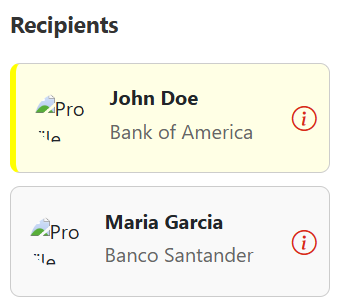
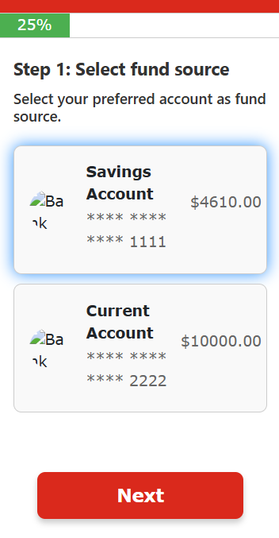

Step-by-Step Tutorials
Find out some of the common features about overseas transfers here.
Follow these steps to add a recipient for your overseas transfer:
Go to the "Recipient" tab in your app and press the "Add Recipient" button.
Choose the currency you want to send from the dropdown menu.
Fill in the recipient's details: Bank name, account number, full name, and country. Press "Add Recipient" to save recipient details.
Add recipient successful. Press "Back to Home" to go back to homepage.
Here's how to view your recipients:
Go to the "Recipient" tab in the app.
Recipients with a yellow background are pinned, while those with a grey background are unpinned. Pinned recipients will appear at the top of the list for easy access.
Tap the info icon on the right of any recipient record to view their details or pin/unpin them as frequent payees. Don’t forget to press “Save Changes” to confirm any updates.
Follow these steps to make an overseas transfer:
Go to the "Recipient" tab and select the recipient you want to send money to.
Choose the bank account or payment source from which you want to transfer money. Then press "Next."
Enter the amount you want to transfer in SGD and press "Refresh" to update the exchange rate.

The exchange rate will be shown, and you will see how much the recipient will receive in their local currency.
Choose the category for your transfer (e.g., Education, Charity). Then press "Next."
Double-check your transfer details. If everything looks good, press "Confirm" to complete the transfer.
After confirming, you’ll be redirected to the "Successful Transfer" page. Press "Back to Home" to return to the main screen.
To view your recent transfers, follow these steps:
Navigate to the "Recent" tab in your app. Here, you’ll see all your past transfers.
If you want to send money again, you can opt to do a "Repeat Transfer." Simply tap the "Repeat Transfer" button for the transfer you want to repeat.
You will be taken to the "Review Transfer Details" page. Confirm everything is correct, then press "Confirm" to repeat the transfer.
Once confirmed, you’ll be redirected to the "Successful Transfer" page. Tap "Back to Home" to return to the main screen.
Here’s how to set up a recurring overseas transfer:
In the "Recipient" tab, press "Add Recurring Transfer" to begin.
Enter the recipient's name, account number, and the account you want to transfer from. Enter the transfer amount in SGD.
Select the currency and set the frequency of the transfer (e.g., weekly, monthly). Then, choose the start date for the recurring transfer.
Review the details of your recurring transfer. Once you’re happy, press "Confirm" to set it up.